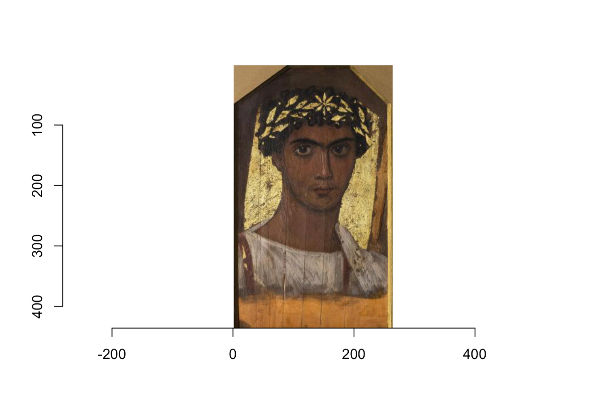
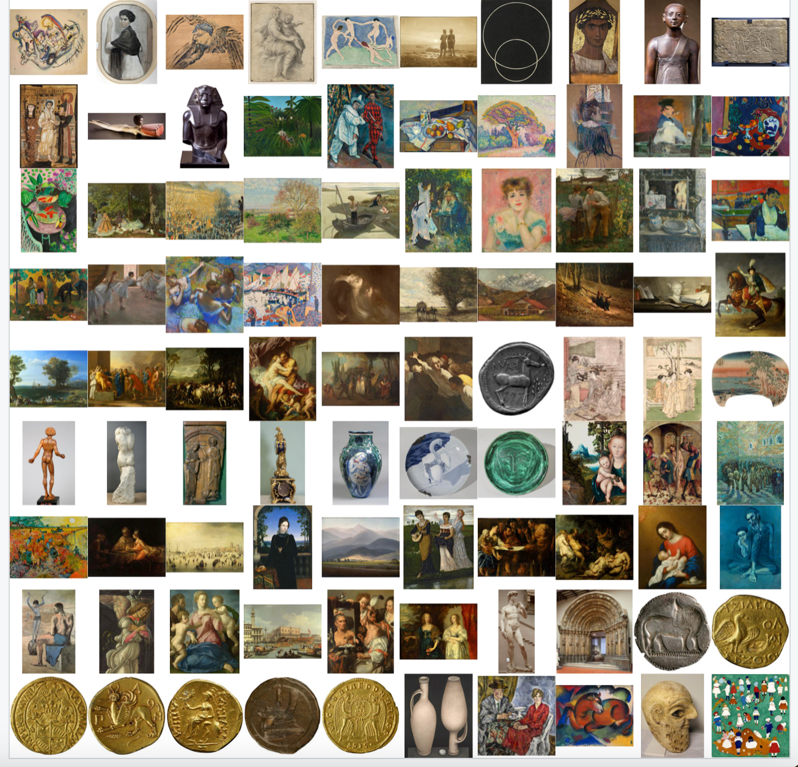

library(jsonlite)
path <- "../files/TBBT.json"
tbbt <- read_json(path)5 Импорт: JSON & XML
Ранее мы научились импортировать табличные данные с расширениями .csv и .tsv. Подробнее об импорте таблиц, текстов и изображений можно посмотреть предыдущую версию курса. В этом уроке речь пойдет о работе со структурированными данными.
5.1 JSON
Формат JSON (JavaScript Object Notation) предназначен для представления структурированных данных. JSON имеет шесть основных типов данных. Четыре из них - скаляры:
- cамый простой тип -
null, который играет ту же роль, что иNAв R. Он представляет собой отсутствие данных; - cтрока (string) похожа на строку в R, но в ней всегда должны использоваться двойные кавычки;
- число аналогично числам в R, при этом поддерживается целочисленная (например, 123), десятичная (например, 123.45) или научная (например, 1,23e3) нотация. JSON не поддерживает
Inf,-InfилиNaN; - логическое значение аналогично
TRUEиFALSEв R, но использует строчные буквыtrueиfalse.
Строки, числа и булевы значения в JSON очень похожи на символьные, числовые и логические векторы в R. Основное отличие заключается в том, что скаляры JSON могут представлять только одно значение. Для представления нескольких значений необходимо использовать один из двух оставшихся типов: массивы и объекты.
И массивы, и объекты похожи на списки в R, разница заключается в том, именованы они или нет. Массив подобен безымянному списку и записывается через []. Например, [1, 2, 3] - это массив, содержащий 3 числа, а [null, 1, "string", false] - массив, содержащий ноль, число, строку и булево значение.
Объект подобен именованному списку и записывается через {}. Имена (ключи в терминологии JSON) являются строками, поэтому должны быть заключены в кавычки. Например, {“x”: 1, “y”: 2} - это объект, который сопоставляет x с 1, а y – с 2.
5.1.1 Пакет jsonlite
Загрузим небольшой файл TBBT.json, хранящий данные о сериале “Теория большого взрыва” (источник). Скачать лучше из репозитория курса ссылка.
Функция read_json() вернула нам список со следующими элементами:
summary(tbbt) Length Class Mode
name 1 -none- character
season_count 1 -none- character
episodes_count_total 1 -none- character
episodes_count_per_season 12 -none- list
casting 11 -none- list
episode_list 280 -none- list
references 1 -none- list 5.1.2 От списка к таблице
Выборочно преобразуем список в тиббл. Функция transpose() берет список списков и выворачивает его наизнанку: вместо списка, в котором для каждого из персонажей указан актер и первое появление, мы получаем три списка: с персонажами, актерами и эпизодами. На месте отсутствующих значений ставится NULL.
library(tidyverse)
cast_tbl <- tbbt$casting |>
transpose() |>
map(as.character) |>
as_tibble()
cast_tblПроделаем то же самое для списка эпизодов, но другим способом. Функция pluck() представляет собой аналог [[, который можно использовать в пайпе. Она позволяет эффективно индексировать многоуровневые списки. Поскольку списков много, мы используем ее в сочетании с map_chr().
episodes_tbl <- tibble(
episode_id = map_chr(tbbt$episode_list, pluck, "episode_id"),
title = map_chr(tbbt$episode_list, pluck, "title"))
episodes_tblЕще один способ описан здесь.
5.1.3 Датасет: Шедевры Пушкинского музея
JSON – популярный формат для публикации открытых данных. В таком виде часто публикуют данные органы государственной власти, культурные и некоммерческие организации и др. Например, Пушкинский музей.
Взглянем на датасет “Шедевры из коллекции музея”. JSON можно прочитать напрямую из Сети.
doc <- read_json("https://pushkinmuseum.art/json/masterpieces.json")Датасет содержит информацию о 97 единицах хранения.
names(doc) [1] "3687" "3675" "3706" "3708" "3713" "3716" "4005" "4011" "4014"
[10] "4023" "4030" "4131" "4147" "4149" "4161" "4163" "4178" "4180"
[19] "4191" "4193" "4198" "4209" "4244" "4255" "4260" "4262" "4266"
[28] "4291" "4325" "4338" "4350" "4421" "4450" "4518" "4543" "4641"
[37] "4711" "4724" "4767" "7563" "4782" "4783" "4788" "4844" "4906"
[46] "4932" "4936" "4941" "4949" "4950" "5238" "5239" "5297" "5347"
[55] "5591" "5798" "5910" "5913" "5992" "6187" "6226" "6564" "6584"
[64] "6586" "6629" "6632" "6886" "7034" "7151" "7457" "7468" "7564"
[73] "7565" "7566" "7567" "7568" "7569" "7570" "9464" "9415" "9046"
[82] "10253" "10284" "10266" "10277" "10282" "10278" "10279" "10280" "10281"
[91] "10285" "10286" "10287" "10288" "10289" "10290" "10291"Для каждого предмета дано подробное описание.
summary(doc[[1]]) Length Class Mode
path 1 -none- character
m_parent_id 1 -none- character
year 1 -none- numeric
get_year 1 -none- character
inv_num 1 -none- character
type 2 -none- list
country 2 -none- list
period 2 -none- list
paint_school 1 -none- character
graphics_type 1 -none- character
department 1 -none- character
masterpiece 1 -none- character
show_in_hall 1 -none- character
show_in_collection 1 -none- numeric
name 2 -none- list
namecom 2 -none- list
size 2 -none- list
text 2 -none- list
annotation 2 -none- list
litra 2 -none- list
restor 2 -none- list
audioguide 2 -none- list
videoguide 2 -none- list
link 2 -none- list
linktext 2 -none- list
producein 2 -none- list
material 2 -none- list
from 2 -none- list
matvos 2 -none- list
sizevos 2 -none- list
prodcast 2 -none- list
searcha 2 -none- list
seakeys 2 -none- list
hall 1 -none- character
building 1 -none- character
gallery 1 -none- list
authors 1 -none- character
collectors 1 -none- list
cast 1 -none- character
shop 1 -none- characterЗаберем только то, что нам интересно.
masterpieces <- tibble(
name = map_chr(doc, pluck, "name", "ru"),
get_year = map_chr(doc, pluck, "get_year"),
year = map_int(doc, pluck, "year"),
period = map_chr(doc, pluck, "period", "name", "ru"),
country = map_chr(doc, pluck, "country", "ru"),
gallery = paste0("https://pushkinmuseum.art", map_chr(doc, pluck, "gallery", 1, 1)))Библиотека imager позволяет работать с изображениями из датасета. Вот так мы могли бы забрать одно из них.
library(imager)
img <- load.image(masterpieces$gallery[1]) |>
plot()
img
В пакете imager есть функция map_il(), которая похожа на свою родню из purrr, но возвращает список изображений.
img_gallery <- map_il(gallery, ~load.image(.x))Функция walk() из пакета purrr – это аналог map() для тех случаев, когда нас интересует только вывод, т.е.не надо ничего сохранять в окружение.
par(mfrow = c(10, 10), mar = rep(0,4))
walk(img_gallery, plot, axes = FALSE)
5.2 XML
XML (от англ. eXtensible Markup Language) — расширяемый язык разметки. Слово “расширяемый” означает, что список тегов не зафиксирован раз и навсегда: пользователи могут вводить свои собственные теги и создавать так называемые настраиваемые языки разметки (Холзнер 2004, 29). Один из таких настраиваемых языков – это TEI (Text Encoding Initiative), о котором будет сказано дальше.
Назначение языков разметки заключается в описании структурированных документов. Структура документа представляется в виде набора вложенных в друг друга элементов (дерева XML). У элементов есть открывающие и закрывающие теги.
Все составляющие части документа обобщаются в пролог и корневой элемент. Корневой элемент — обязательная часть документа, в которую вложены все остальные элементы. Пролог может включать объявления, инструкции обработки, комментарии.
В правильно сформированном XML открывающий и закрывающий тег вложенного элемента всегда находятся внутри одного родительского элемента.
Создадим простой XML из строки. Сначала идет инструкция по обработке XML (со знаком вопроса), за ней следует объявление типа документа (с восклицательным знаком) и открывающий тег корневого элемента. В этот корневой элемент вложены все остальные элементы.
string_xml <- '<?xml version="1.0" encoding="utf-8"?>
<!DOCTYPE recipe>
<recipe name="хлеб" preptime="5min" cooktime="180min">
<title>
Простой хлеб
</title>
<composition>
<ingredient amount="3" unit="стакан">Мука</ingredient>
<ingredient amount="0.25" unit="грамм">Дрожжи</ingredient>
<ingredient amount="1.5" unit="стакан">Тёплая вода</ingredient>
</composition>
<instructions>
<step>
Смешать все ингредиенты и тщательно замесить.
</step>
<step>
Закрыть тканью и оставить на один час в тёплом помещении.
</step>
<step>
Замесить ещё раз, положить на противень и поставить в духовку.
</step>
</instructions>
</recipe>'5.2.1 Библиотека XML
Для работы с xml понадобится установить одноименную библиотеку. Функция xmlTreeParse() создаст R-структуру, представляющую дерево XML.
library(XML)
doc <- xmlTreeParse(string_xml)
class(doc)[1] "XMLDocument" "XMLAbstractDocument"Функция xmlRoot() позволяет извлечь корневой элемент вместе со всеми детьми.
rootnode <- xmlRoot(doc)
rootnode<recipe name="хлеб" preptime="5min" cooktime="180min">
<title>Простой хлеб</title>
<composition>
<ingredient amount="3" unit="стакан">Мука</ingredient>
<ingredient amount="0.25" unit="грамм">Дрожжи</ingredient>
<ingredient amount="1.5" unit="стакан">Тёплая вода</ingredient>
</composition>
<instructions>
<step>Смешать все ингредиенты и тщательно замесить.</step>
<step>Закрыть тканью и оставить на один час в тёплом помещении.</step>
<step>Замесить ещё раз, положить на противень и поставить в духовку.</step>
</instructions>
</recipe>Если документ большой, бывает удобнее не распечатывать все дерево, а вывести имена дочерних элементов.
names(xmlChildren(rootnode))[1] "title" "composition" "instructions"Размер узла – это число вложенных в него “детей”. Его можно узнать, применив к узлу функцию xmlSize() – или посчитав число “детей”.
xmlSize(rootnode) == length(xmlChildren(rootnode))[1] TRUE5.2.2 Выбор элементов
Работать с xml можно как с обычным списком, то есть индексировать узлы по имени или по номеру элемента при помощи квадратных скобок. Так мы достаем узел по имени:
rootnode[["composition"]]<composition>
<ingredient amount="3" unit="стакан">Мука</ingredient>
<ingredient amount="0.25" unit="грамм">Дрожжи</ingredient>
<ingredient amount="1.5" unit="стакан">Тёплая вода</ingredient>
</composition>А так – по индексу:
rootnode[[2]]<composition>
<ingredient amount="3" unit="стакан">Мука</ingredient>
<ingredient amount="0.25" unit="грамм">Дрожжи</ingredient>
<ingredient amount="1.5" unit="стакан">Тёплая вода</ingredient>
</composition>Как и с обычными списками, мы можем использовать последовательности квадратных скобок:
ingr_node <- rootnode[[2]][["ingredient"]]
ingr_node<ingredient amount="3" unit="стакан">Мука</ingredient>5.2.3 Значения узлов и атрибутов
Но обычно нам нужен не элемент как таковой, а его содержание (значение). Чтобы добраться до него, используем функцию xmlValue():
xmlValue(ingr_node)[1] "Мука"Можно уточнить атрибуты узла при помощи xmlAttrs():
xmlAttrs(ingr_node) amount unit
"3" "стакан" Чтобы извлечь значение атрибута, используем функцию xmlGetAttr(). Первым аргументом функции передаем xml-узел, вторым – имя атрибута.
xmlGetAttr(ingr_node, "unit")[1] "стакан"5.2.4 Обход дерева узлов
Как насчет того, чтобы применить функцию к набору узлов – например, ко всем инредиентам? Вспоминаем функции для работы со списками – sapply() из базового R или map() из пакета purrr:
ingr_nodes <- xmlChildren(rootnode[[2]])
sapply(ingr_nodes, xmlValue) ingredient ingredient ingredient
"Мука" "Дрожжи" "Тёплая вода" sapply(ingr_nodes, xmlGetAttr, "unit")ingredient ingredient ingredient
"стакан" "грамм" "стакан" 5.2.5 Синтаксис XPath
Добраться до узлов определенного уровня можно также при помощи синтаксиса XPath. XPath – это язык запросов к элементам XML-документа. С его помощью можно описать “путь” до нужного узла: абсолютный (начиная с корневого элемента) или относительный. В пакете XML синтаксис XPath поддерживает функция getNodeSet().
# абсолютный путь
ingr_nodes <- getNodeSet(rootnode, "/recipe//composition//ingredient")
ingr_nodes[[1]]
<ingredient amount="3" unit="стакан">Мука</ingredient>
[[2]]
<ingredient amount="0.25" unit="грамм">Дрожжи</ingredient>
[[3]]
<ingredient amount="1.5" unit="стакан">Тёплая вода</ingredient># относительный путь
ingr_nodes <- getNodeSet(rootnode, "//composition//ingredient")
ingr_nodes[[1]]
<ingredient amount="3" unit="стакан">Мука</ingredient>
[[2]]
<ingredient amount="0.25" unit="грамм">Дрожжи</ingredient>
[[3]]
<ingredient amount="1.5" unit="стакан">Тёплая вода</ingredient>Синтаксис XPath позволяет отбирать узлы с определенными атрибутами. Допустим, нам нужны только те узлы, где значение атрибута unit = “стакан”:
getNodeSet(rootnode, "//composition//ingredient[@unit='стакан']")[[1]]
<ingredient amount="3" unit="стакан">Мука</ingredient>
[[2]]
<ingredient amount="1.5" unit="стакан">Тёплая вода</ingredient>5.2.6 От дерева к таблице
При работе с xml в большинстве случаев наша задача – извлечь значения определеннных узлов или их атрибутов и сохранить их в прямоугольном формате. Один из способов выглядит так.
tibble(title = xmlValue(rootnode[["title"]]),
ingredients = map_chr(xmlChildren(rootnode[["composition"]]), xmlValue),
unit = map_chr(xmlChildren(rootnode[["composition"]]), xmlGetAttr, "unit"),
amount = map_chr(xmlChildren(rootnode[["composition"]]), xmlGetAttr, "amount"))5.2.7 Разметка TEI
Большая часть размеченных литературных корпусов хранится именно в формате XML. Это очень удобно, и вот почему: документы в формате XML, как и документы в формате HTML, содержат данные, заключенные в теги, но если в формате HTML теги определяют оформление данных, то в формате XML теги нередко определяют структуру и смысл данных. С их помощью мы можем достать из документа именно то, что нам интересно: определенную главу, речи конкретных персонажей, слова на иностранных языках и т.п.
Добавлять и удалять разметку может любой пользователь в редакторе XML кода или даже в простом текстовом редакторе. При этом в качестве универсального языка разметки в гуманитарных дисциплинах используется язык TEI (Скоринкин 2016). Корневой элемент в документах TEI называется TEI, внутри него располагается элемент teiHeader с метаинформацией о документе и элемент text. Последний содержит текст документа с элементами, определяющими его структурное членение.
<TEI>
<teiHeader></teiHeader>
<text></text>
</TEI>Пример оформления документа можно посмотреть по ссылке.
У teiHeader есть четыре главных дочерних элемента:
fileDesc(описание документа c библиографической информацией)encodingDesc(описание способа кодирование первоисточника)profileDesc(“досье” на текст, например отправитель и получатель для писем, жанр, используемые языки, обстоятельства создания, место написания и т.п.)revisionDesc(история изменений документа).
В самом тексте язык TEI дает возможность представлять разные варианты (авторские, редакторские, корректорские и др.) Основным средством параллельного представления является элемент choice. Например, в тексте Лукреция вы можете увидеть такое:
sic calor atque <choice><reg>aer</reg><orig>aër</orig></choice> et venti caeca potestasЗдесь reg указывает на нормализованное написание, а orig – на оригинальное.
5.2.8 Датасет: “Война и мир”
В качестве примера загрузим датасет “Пушкинского дома”, подготовленный Д.А. Скоринкиным: “Персонажи «Войны и мира» Л. Н. Толстого: вхождения в тексте, прямая речь и семантические роли”.
filename = "../files/War_and_Peace.xml"
doc <- xmlTreeParse(filename, useInternalNodes = T)
rootnode <- xmlRoot(doc)Теперь можно внимательнее взглянуть на структуру xml. Корневой элемент расходится на две ветви. Полностью они нам пока не нужны, узнаем только имена:
names(xmlChildren(rootnode)) [1] "teiHeader" "text" Очевидно, что что-то для нас интересное будет спрятано в ветке text, глядим на нее:
names(xmlChildren(rootnode[["text"]])) [1] "div" "div" "div" "div" "div"Итак, текст делится на какие-то пять частей. Функция xmlGetAttr() позволяет узнать значение атрибута type: как выясняется, это четыре тома и эпилог.
# это список
divs <- rootnode[["text"]]["div"]
sapply(divs, xmlGetAttr, "type") div div div div div
"volume" "volume" "volume" "volume" "epilogue" Как мы уже знаем, добраться до определенного узла можно не только путем индексирования, но и – гораздо удобнее – при помощи синтаксиса XPath. Для этого просто указываем путь до узла. Попробуем спуститься на два уровня ниже: там тоже будет тег div, но с другим атрибутом. Как легко убедиться, теперь это главы, всего их 358.
divs <- getNodeSet(doc, "/tei:TEI//tei:text//tei:div//tei:div//tei:div",
namespaces = c(tei = "http://www.tei-c.org/ns/1.0"))
length(divs)[1] 358unique(sapply(divs, xmlGetAttr, "type"))[1] "chapter"Обратите внимание, что в данном случае надо прямо прописать пространство имен (namespaces). Это можно посмотреть в самом xml, а можно воспользоваться специальной функцией:
xmlNamespace(rootnode)[1] "http://www.tei-c.org/ns/1.0"
attr(,"class")
[1] "XMLNamespace"Забрать конкретную главу можно путем индексации, но лучше – по значению соответствующего атрибута.
idx <- which(map(divs, xmlGetAttr, "xml:id") == "chapter1part1Volume1")
ch1 <- divs[[idx]]Чтобы извлечь текст, понадобится функция xmlValue.
chapter_1 <- xmlValue(ch1)Распечатывать весь текст первой главы не будем (это очень длинный вектор); разобъем текст на параграфы и выведем первый и последний:
library(stringr)
chapter_lines <- str_split(chapter_1, pattern = "\n")
chapter_lines[[1]][[5]][1] " — Eh bien, mon prince. Gênes et Lueques ne sont plus que des apanages, des поместья, de la famille Buonaparte. Non, je vous préviens que si vous ne me dites pas que nous avons la guerre, si vous vous permettez encore de pallier toutes les infamies, toutes les atrocités de cet Antichrist (ma parole, j'y crois) — je ne vous connais plus, vous n'êtes plus mon ami, vous n'êtes plus мой верный раб, comme vous dites. Ну, здравствуйте, здравствуйте. Je vois que je vous fais peur, садитесь и рассказывайте."chapter_lines[[1]][[838]][1] " Ce sera dans votre famille que je ferai mon apprentissage de vieille fille."Первая и последняя реплика по-французски: все правильно!
Подбробнее о структуре XML документов и способах работы с ними вы можете прочитать в книгах: (Nolan и Lang 2014) и (Холзнер 2004).